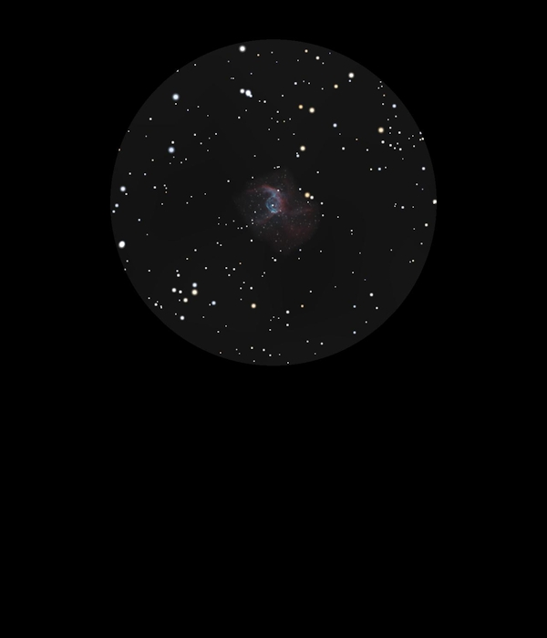

NGC 2359
Emission Nebula in Canis Major
NGC 2359
Mag 11.45
Thor's Helmet, Duck Head Nebula
20/01/17
Very difficult to locate and even when in exact location only
just glimpsed as a tiny hazy patch, quite a challenge which is
appropriate since it is one of AN's deep sky challenges for
January
In 8mm just a hint but in a nice FOV